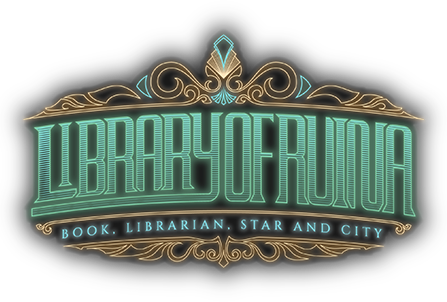

Lobotomy Corporation
Lobotomy Corporation is a roguelite monster-management simulation game developed by Project Moon. Within this dystopian company, play as the newly-hired manager tasked with overseeing all of the employees, gear, and unique "Abnormalities" within your facility

Library of Ruina
Dear guest, welcome to the Library of Ruina Wiki, the unofficial encyclopedia for Library of Ruina by South Korean studio Project Moon. Library of Ruina is the second entry in the story of the City, preceded by Lobotomy Corporation and followed by Limbus Company
Limbus Company
Limbus CompanyLimbus logo feather.png is a single-player turn-based RPG developed by Project Moon. It launched on February 27th, 2023, following the story of an amnesiac Executive Manager's task of guiding twelve outlandish Sinners through their troubled pasts and to the Golden Boughs. It takes place after preceding games Lobotomy Corporation and Library of Ruina